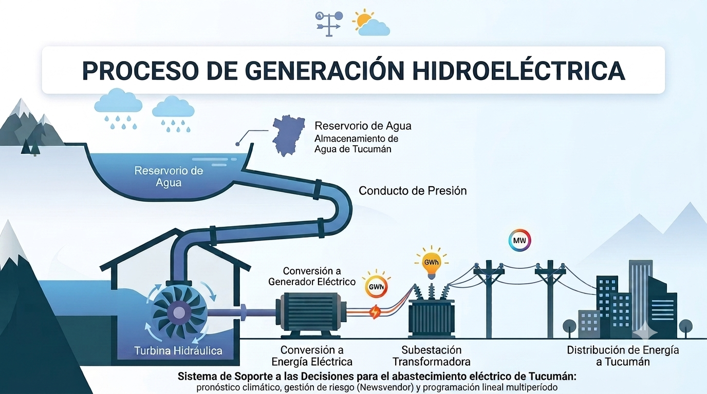
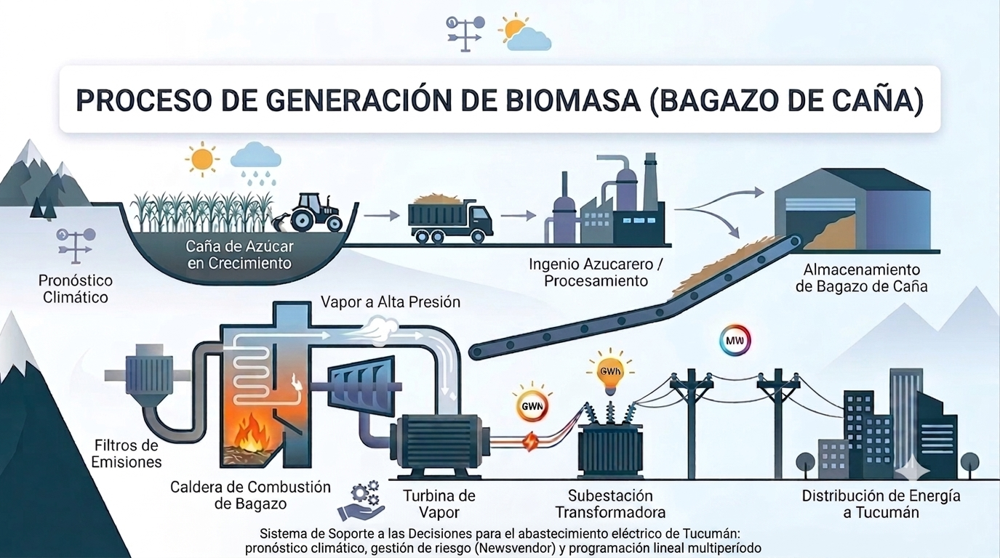
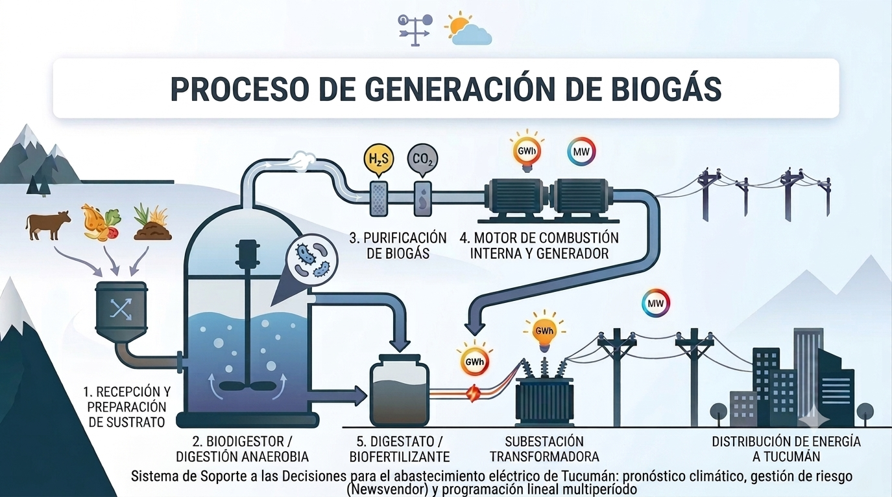

Diseño de un Sistema de Soporte a las Decisiones en la Red Eléctrica de Tucumán
Abstract
Este trabajo desarrolla un Sistema de Soporte a las Decisiones para la planificación operativa del abastecimiento eléctrico de Tucumán, integrando un modelo de pronóstico estacional con variable exógena climática para proyectar la demanda mensual de 2027 (MAPE = 3%), un modelo estocástico Newsvendor para dimensionar la reserva térmica de respaldo óptima, y un modelo de Programación Lineal Multiperíodo que determina la asignación mensual de energía entre las fuentes renovables locales (hidráulica, biomasa y biogás) y la energía convencional del Mercado Eléctrico Mayorista.
El Terreno: Matriz Renovable y Restricciones
La provincia presenta una problemática estructural en su sistema de distribución eléctrica, caracterizada por picos críticos de demanda estival debido a factores climáticos externos. Al mismo tiempo, Tucumán enfrenta el desafío de integrar energías renovables con disponibilidad variable bajo la Ley N.º 27.191.



Desarrollo Técnico
Reemplazamos las decisiones operativas empíricas por un enfoque basado en Investigación Operativa de tres módulos secuenciales.
A Pronóstico de Demanda
| Mes / Año | Demanda (GWh) | Temperatura (°C) |
|---|---|---|
Modelo de regresión ajustado sobre 84 observaciones mensuales (2019-2025). La demanda proyectada inicia en 313 GWh (Enero), cae a 212 (Abril), y repunta a 307 (Diciembre).
B Gestión de Riesgo (Newsvendor)
El modelo estocástico balancea el riesgo de desabastecimiento. La asimetría entre el costo de quedarse corto frente al de tener exceso dictamina el stock de seguridad.
| Mes (2027) | Desvío Est. (σ) | Stock de Seguridad (SSt) |
|---|---|---|
| 14,2 |
La reserva térmica óptima contratada requerida fluctúa entre 42 y 51 GWh mensuales para cubrir la incertidumbre histórica y proyectada.
C Programación Lineal Multiperíodo
Determina la combinación mensual óptima de compra minimizando el costo operativo total, sujeto a la restricción física de transporte y la obligación del despacho preferencial renovable.
| Fuente Renovable / Convencional | Costo Variable Promedio (USD/GWh) |
|---|---|
| Mercado Eléctrico Mayorista (MEM) | 56.630 – 97.070 |
| Generación Hidráulica Local | 101.930 |
| Generación por Biomasa | 124.370 |
| Generación por Biogás | 159.420 |
Impacto del Despacho Preferencial (Ley N° 27.191)
Al forzar la compra de renovables locales, cuyo costo (Hidráulica, Biomasa, Biogás) supera al del Mercado Convencional (MEM), se incurre en un sobrecosto anual cuantificado del +3,63%. Es el costo financiero de sostener la matriz verde.
Resultados: El Giro Crítico
Análisis de Sensibilidad: ¿Qué apaga las luces en Tucumán?
Comportamiento No Lineal
La suma esperada (0 GWh por clima + 41 GWh por red) debería ser 41 GWh. Sin embargo, el déficit resultante salta a 219 GWh (5,3 veces más). El verdadero riesgo para Tucumán no es el clima extremo per se, sino el margen nulo de su infraestructura de transporte que colapsa ante cualquier estrés adicional.
Referencias Documentales
- [1] Estación Experimental Agroindustrial Obispo Colombres (EEAOC), «Caracterización energética de bagazo de caña de azúcar en Tucumán». Ver fuente →
- [2] Ley N.° 27.191, Régimen de Fomento Nacional para el uso de Fuentes Renovables de Energía. Ver fuente →
- [3] APPA Renovables, «¿Qué es el biogás?». Ver fuente →
- [4] CAMMESA, Base de datos de Energías Renovables y Precios Mensuales (MEM / MATER). Ver fuente →
- [5] Ente Regulador de los Servicios Eléctricos de Tucumán [ERSEPT], Restricciones de red El Bracho. Ver fuente →
- [6] Secretaría de Energía, Resolución N.° 137/1992. Valores regulados CENS. Ver fuente →